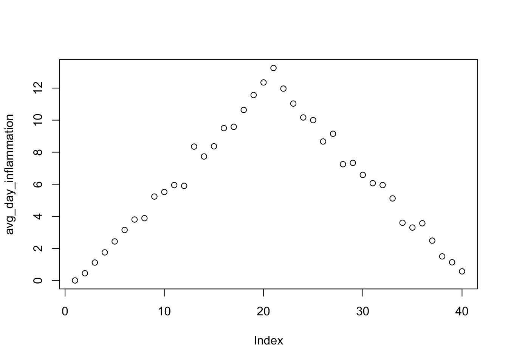
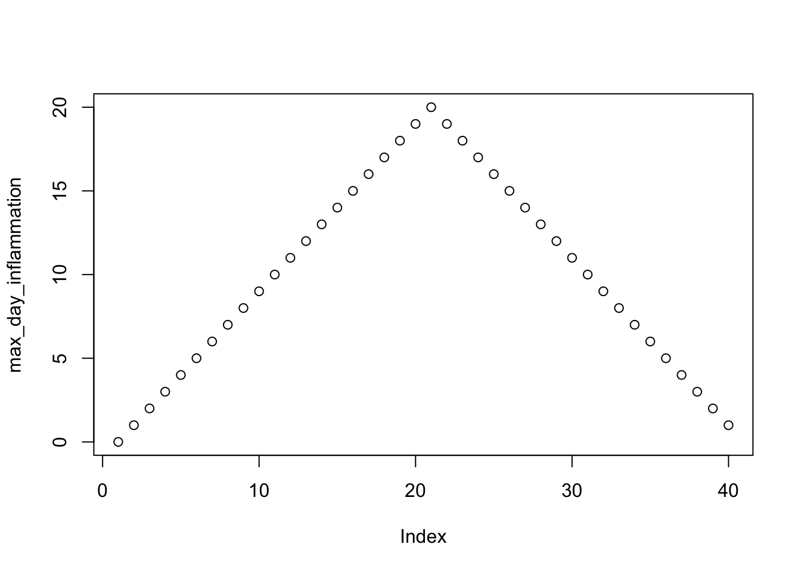
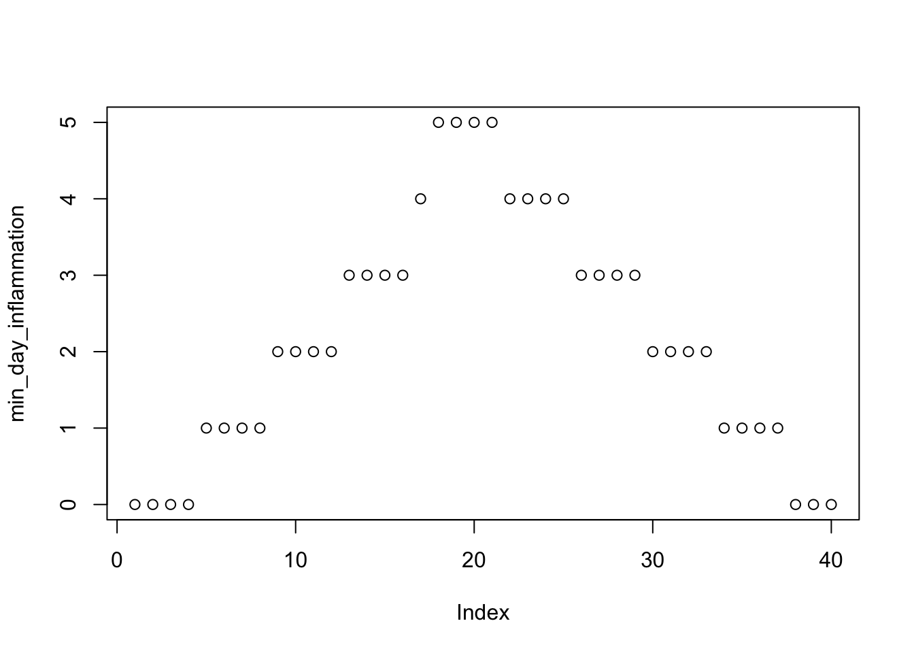

R is an open source programming language and a free environment, mainly used for statistical computing and graphics. Information about R you can find in the official website. By searching with the keyword R with other topic-specific words in sites like Google, one can find additional information from sites, blog posts, tutorials, documents etc.
Even through R comes with its own environment: command line and graphical interfaces, one can use the popular RStudio, which offers additional graphical functionalities.
When in the R environment (the R prompt is >) one can exit by calling the quit() function or q() for short. When asked if you want to save the workspace, if you reply with a y for yes, all the variables that you have during the current R session will be saved into a file names .Rdata in the current working directory. If you later start R in the same directory, the variables and their names will be automatically loaded.
To check which is your current working directory, your can enter:
getwd()To set the working directory one can use the setwd function:
setwd("~/Desktop")What you type at the R prompt is an expression, which R attempts to evaluate and type the result. For example getwd() is an expression that is evaluated by calling the function getwd() with no arguments. The same for 42
42## [1] 42and the same for
(100 * 2 - 12 ^ 2) / 7 * 5 + 2## [1] 42There are also predefined constants like pi or e
sin(pi/2)## [1] 1To find out the documentation of a specific function you can enter ?sum or help(sum). To search for functions, there is the help.search("sin") function to help you with that. For certain functions on can see examples of use by using the expression example(plot). Comments start with #, while to assign values to variables you can use <- or =. For example:
To find out the documentation of a specific function you can enter ?sum or help(sum). To search for functions, there is the help.search("sin") function to help you with that. For certain functions on can see examples of use by using the expression example(plot). Comments start with #, while to assign values to variables you can use <- or =. For example:
a <- 42
b <- (42 + a) / 2
print(a)## [1] 42print(b)## [1] 42With ls() one can check all the variables existing in the current R session.
ls()## [1] "a" "accuracy" "b"
## [4] "centers.matrix" "clustering" "col"
## [7] "control" "ctree" "ctrl"
## [10] "d" "data" "data_new"
## [13] "data_norm" "dataset" "dbscanClust"
## [16] "demo" "df" "distances"
## [19] "entTree" "evaluation" "f"
## [22] "fileURL" "fulldata" "groups"
## [25] "hc" "ind" "indices"
## [28] "inTrain" "kmeansClust" "kNNFit"
## [31] "kNNFit1" "kNNFit2" "kNNFit4"
## [34] "knnFit5" "knnPredict" "knnPredict2"
## [37] "logTrainDataX" "logValidationDataX" "model"
## [40] "outlier.list1" "outlier.list2" "outlier.scores"
## [43] "outliers" "pch" "PimaIndiansDiabetes"
## [46] "precision" "pred" "pred_obj"
## [49] "pred_prob" "prediction" "prediction_pca"
## [52] "recall" "ROCcurve" "rules"
## [55] "S" "simpler_model" "simpler_pred"
## [58] "Sonar" "subset" "testing"
## [61] "train_pred" "train_simpler_pred" "train.pca"
## [64] "trainData" "trainDataX" "trainDataY"
## [67] "training" "trans" "tree"
## [70] "tree_with_params" "udv" "validation.pca"
## [73] "validationData" "validationDataX" "validationDataY"
## [76] "x" "x1" "x2"
## [79] "xtab" "y" "y1"
## [82] "y2" "ytest"# while to delete all the variables in the current session you can use the call:
rm(list=ls())Create the vector a = (10, 5, 3, 100, -2, 5, -50)
a <- c(10, 5, 3, 100, -2, 5, -50)
a## [1] 10 5 3 100 -2 5 -50Select the elements of the vector with indices 1, 3, 4, and 5:
a[c(1,3:4)]## [1] 10 3 100The above expression uses the c() function for combining values and the : operator that generates sequences from:to with step 1. Another easy way of specifying sequences is to use the seq function.
c(1, 2, 7, 10)## [1] 1 2 7 101:10## [1] 1 2 3 4 5 6 7 8 9 10seq(1, 6, by=1)## [1] 1 2 3 4 5 6seq(1,6, by=2)## [1] 1 3 5seq(1,by=2, length=6)## [1] 1 3 5 7 9 11Type ?seq to get to know the function.
To check the type of a variable there is the class function:
class(a)## [1] "numeric"To check which a elements have a value greater than 5:
a > 5## [1] TRUE FALSE FALSE TRUE FALSE FALSE FALSEwhich(a>5)## [1] 1 4# returns the indices for which the values are TRUETo get the positive elements of a:
b <- a > 0
positives <- a[b]
positives## [1] 10 5 3 100 5# or more succintly
positives <- a[a>0]
positives## [1] 10 5 3 100 5To check the length of a vector:
length(a)## [1] 7One can also bind vectors by column (cbind()) or by row (rbind())
c <- 1:7
rbind(a,c)## [,1] [,2] [,3] [,4] [,5] [,6] [,7]
## a 10 5 3 100 -2 5 -50
## c 1 2 3 4 5 6 7cbind(a,c)## a c
## [1,] 10 1
## [2,] 5 2
## [3,] 3 3
## [4,] 100 4
## [5,] -2 5
## [6,] 5 6
## [7,] -50 7To create matrics use the matrix() function
matrix(10,3, 2)## [,1] [,2]
## [1,] 10 10
## [2,] 10 10
## [3,] 10 10# or
matrix(c(1,2,3,4,5,6), 3, 2)## [,1] [,2]
## [1,] 1 4
## [2,] 2 5
## [3,] 3 6# or
matrix(c(1,2,3), 3, 2)## [,1] [,2]
## [1,] 1 1
## [2,] 2 2
## [3,] 3 3But let’s examine how are we calling the matrix function:
args(matrix)## function (data = NA, nrow = 1, ncol = 1, byrow = FALSE, dimnames = NULL)
## NULLSo the first argument are the data, then with nrow or ncol arguments we can declare the number of rows and columns and with the argument byrow we declare that we want to fill in the matrix column-by-column if byrow=FALSE and row-by-row if byrow=TRUE. In the above calls we didn’t use the byrow argument because the function matrix has a default value byrow=FALSE as we can also check from the documentation, ?matrix.
m = matrix(1:9, byrow = TRUE, nrow=3)
m## [,1] [,2] [,3]
## [1,] 1 2 3
## [2,] 4 5 6
## [3,] 7 8 9Here we have filled in a matrix with values 1 to 9, by row, with the number of rows equal to 3. This gives us a square 3x3 matrix. R is pretty smart in knowing that the number of columns should be 3 as well!
We can also call cbind and rbind and other functions like rowSums, colSums, mean, t for transpose etc.
m2 <- rbind(m, m)
m2## [,1] [,2] [,3]
## [1,] 1 2 3
## [2,] 4 5 6
## [3,] 7 8 9
## [4,] 1 2 3
## [5,] 4 5 6
## [6,] 7 8 9rowSums(m2)## [1] 6 15 24 6 15 24colSums(m2)## [1] 24 30 36mean(m2)## [1] 5For element wise multiplication on can use the * operator while for matrix multiplication you can use the %*% operator.
am <- matrix(10:18, byrow = TRUE, nrow = 3)
am## [,1] [,2] [,3]
## [1,] 10 11 12
## [2,] 13 14 15
## [3,] 16 17 18bm <- matrix(c(3,6,7,10,8,1,2,3,2), byrow = TRUE, nrow = 3)
bm## [,1] [,2] [,3]
## [1,] 3 6 7
## [2,] 10 8 1
## [3,] 2 3 2am * bm## [,1] [,2] [,3]
## [1,] 30 66 84
## [2,] 130 112 15
## [3,] 32 51 36am %*% bm## [,1] [,2] [,3]
## [1,] 164 184 105
## [2,] 209 235 135
## [3,] 254 286 165t(am)## [,1] [,2] [,3]
## [1,] 10 13 16
## [2,] 11 14 17
## [3,] 12 15 18Unlike matrices, data frames can store values of different types in their columns. They are used extensively in R for data analysis. As rows usually we have the observations (or samples) and as columns we have the characteristics (or attributes or features). When we read from a file, the result is read as a data frame. Download the zip file r-novice-inflammation.zip and unzip it in the Desktop. Examine the file inflammation-01.csv with a text editor to see what we are going to be loading. The read the file:
data <- read.csv(file = "data/inflammation-01.csv", header = FALSE)
# Notice the use of the path including data/ since we previously set the working directory as the Desktop
getwd()## [1] "/Users/kyrcha/Workspaces/github/ml-tutorials"dir()## [1] "_site.yml" "ar.html"
## [3] "ar.Rmd" "breast-cancer-wisconsin.data"
## [5] "cfs.html" "cfs.Rmd"
## [7] "classification.html" "classification.Rmd"
## [9] "clustering.html" "clustering.Rmd"
## [11] "CNAME" "data"
## [13] "data-eng.html" "data-eng.Rmd"
## [15] "dbscan_files" "dbscan.html"
## [17] "dbscan.Rmd" "docs"
## [19] "dt_files" "dt.html"
## [21] "dt.Rmd" "finder.html"
## [23] "finder.Rmd" "footer.html"
## [25] "footer.tex" "head.tex"
## [27] "hierarchical_files" "hierarchical.html"
## [29] "hierarchical.Rmd" "index.html"
## [31] "index.Rmd" "intro_files"
## [33] "intro.html" "intro.Rmd"
## [35] "kmeans_files" "kmeans.html"
## [37] "kmeans.Rmd" "knn_files"
## [39] "knn.html" "knn.Rmd"
## [41] "ml-tutorials.Rproj" "nb_files"
## [43] "nb.html" "nb.Rmd"
## [45] "nn.html" "nn.Rmd"
## [47] "other.html" "other.Rmd"
## [49] "outlier_files" "outlier.html"
## [51] "outlier.Rmd" "pca_files"
## [53] "pca.html" "pca.Rmd"
## [55] "r.html" "r.Rmd"
## [57] "README.html" "README.md"
## [59] "render.sh" "retail.data.gz"
## [61] "rfe.Rmd" "site_libs"
## [63] "style.css" "uc.Rmd"
## [65] "wrapper.Rmd"The dir function return the files and directories of the file system. The argument header=FALSE lets the read.csv function know that there is no header row to give the columns names.
With head(data) I can check if the data are loaded correctly. It return the first few rows:
head(data)## V1 V2 V3 V4 V5 V6 V7 V8 V9 V10 V11 V12 V13 V14 V15 V16 V17 V18 V19 V20
## 1 0 0 1 3 1 2 4 7 8 3 3 3 10 5 7 4 7 7 12 18
## 2 0 1 2 1 2 1 3 2 2 6 10 11 5 9 4 4 7 16 8 6
## 3 0 1 1 3 3 2 6 2 5 9 5 7 4 5 4 15 5 11 9 10
## 4 0 0 2 0 4 2 2 1 6 7 10 7 9 13 8 8 15 10 10 7
## 5 0 1 1 3 3 1 3 5 2 4 4 7 6 5 3 10 8 10 6 17
## 6 0 0 1 2 2 4 2 1 6 4 7 6 6 9 9 15 4 16 18 12
## V21 V22 V23 V24 V25 V26 V27 V28 V29 V30 V31 V32 V33 V34 V35 V36 V37 V38
## 1 6 13 11 11 7 7 4 6 8 8 4 4 5 7 3 4 2 3
## 2 18 4 12 5 12 7 11 5 11 3 3 5 4 4 5 5 1 1
## 3 19 14 12 17 7 12 11 7 4 2 10 5 4 2 2 3 2 2
## 4 17 4 4 7 6 15 6 4 9 11 3 5 6 3 3 4 2 3
## 5 9 14 9 7 13 9 12 6 7 7 9 6 3 2 2 4 2 0
## 6 12 5 18 9 5 3 10 3 12 7 8 4 7 3 5 4 4 3
## V39 V40
## 1 0 0
## 2 0 1
## 3 1 1
## 4 2 1
## 5 1 1
## 6 2 1Other function I can use are:
# type of the variable
class(data)## [1] "data.frame"# dimensions
dim(data)## [1] 60 40# structure
str(data)## 'data.frame': 60 obs. of 40 variables:
## $ V1 : int 0 0 0 0 0 0 0 0 0 0 ...
## $ V2 : int 0 1 1 0 1 0 0 0 0 1 ...
## $ V3 : int 1 2 1 2 1 1 2 1 0 1 ...
## $ V4 : int 3 1 3 0 3 2 2 2 3 2 ...
## $ V5 : int 1 2 3 4 3 2 4 3 1 1 ...
## $ V6 : int 2 1 2 2 1 4 2 1 5 3 ...
## $ V7 : int 4 3 6 2 3 2 2 2 6 5 ...
## $ V8 : int 7 2 2 1 5 1 5 3 5 3 ...
## $ V9 : int 8 2 5 6 2 6 5 5 5 5 ...
## $ V10: int 3 6 9 7 4 4 8 3 8 8 ...
## $ V11: int 3 10 5 10 4 7 6 7 2 6 ...
## $ V12: int 3 11 7 7 7 6 5 8 4 8 ...
## $ V13: int 10 5 4 9 6 6 11 8 11 12 ...
## $ V14: int 5 9 5 13 5 9 9 5 12 5 ...
## $ V15: int 7 4 4 8 3 9 4 10 10 13 ...
## $ V16: int 4 4 15 8 10 15 13 9 11 6 ...
## $ V17: int 7 7 5 15 8 4 5 15 9 13 ...
## $ V18: int 7 16 11 10 10 16 12 11 10 8 ...
## $ V19: int 12 8 9 10 6 18 10 18 17 16 ...
## $ V20: int 18 6 10 7 17 12 6 19 11 8 ...
## $ V21: int 6 18 19 17 9 12 9 20 6 18 ...
## $ V22: int 13 4 14 4 14 5 17 8 16 15 ...
## $ V23: int 11 12 12 4 9 18 15 5 12 16 ...
## $ V24: int 11 5 17 7 7 9 8 13 6 14 ...
## $ V25: int 7 12 7 6 13 5 9 15 8 12 ...
## $ V26: int 7 7 12 15 9 3 3 10 14 7 ...
## $ V27: int 4 11 11 6 12 10 13 6 6 3 ...
## $ V28: int 6 5 7 4 6 3 7 10 13 8 ...
## $ V29: int 8 11 4 9 7 12 8 6 10 9 ...
## $ V30: int 8 3 2 11 7 7 2 7 11 11 ...
## $ V31: int 4 3 10 3 9 8 8 4 4 2 ...
## $ V32: int 4 5 5 5 6 4 8 9 6 5 ...
## $ V33: int 5 4 4 6 3 7 4 3 4 4 ...
## $ V34: int 7 4 2 3 2 3 2 5 7 5 ...
## $ V35: int 3 5 2 3 2 5 3 2 6 1 ...
## $ V36: int 4 5 3 4 4 4 5 5 3 4 ...
## $ V37: int 2 1 2 2 2 4 4 3 2 1 ...
## $ V38: int 3 1 2 3 0 3 1 2 1 2 ...
## $ V39: int 0 0 1 2 1 2 1 2 0 0 ...
## $ V40: int 0 1 1 1 1 1 1 1 0 0 ...# statistical summarization of the data frame
summary(data)## V1 V2 V3 V4 V5
## Min. :0 Min. :0.00 Min. :0.000 Min. :0.00 Min. :1.000
## 1st Qu.:0 1st Qu.:0.00 1st Qu.:1.000 1st Qu.:1.00 1st Qu.:1.000
## Median :0 Median :0.00 Median :1.000 Median :2.00 Median :2.000
## Mean :0 Mean :0.45 Mean :1.117 Mean :1.75 Mean :2.433
## 3rd Qu.:0 3rd Qu.:1.00 3rd Qu.:2.000 3rd Qu.:3.00 3rd Qu.:3.000
## Max. :0 Max. :1.00 Max. :2.000 Max. :3.00 Max. :4.000
## V6 V7 V8 V9
## Min. :1.00 Min. :1.0 Min. :1.000 Min. :2.000
## 1st Qu.:2.00 1st Qu.:2.0 1st Qu.:2.000 1st Qu.:4.000
## Median :3.00 Median :4.0 Median :4.000 Median :5.000
## Mean :3.15 Mean :3.8 Mean :3.883 Mean :5.233
## 3rd Qu.:4.00 3rd Qu.:5.0 3rd Qu.:5.250 3rd Qu.:7.000
## Max. :5.00 Max. :6.0 Max. :7.000 Max. :8.000
## V10 V11 V12 V13
## Min. :2.000 Min. : 2.00 Min. : 2.00 Min. : 3.00
## 1st Qu.:3.750 1st Qu.: 4.00 1st Qu.: 3.75 1st Qu.: 5.00
## Median :6.000 Median : 6.00 Median : 5.50 Median : 9.50
## Mean :5.517 Mean : 5.95 Mean : 5.90 Mean : 8.35
## 3rd Qu.:7.000 3rd Qu.: 9.00 3rd Qu.: 8.00 3rd Qu.:11.00
## Max. :9.000 Max. :10.00 Max. :11.00 Max. :12.00
## V14 V15 V16 V17
## Min. : 3.000 Min. : 3.000 Min. : 3.0 Min. : 4.000
## 1st Qu.: 5.000 1st Qu.: 5.000 1st Qu.: 6.0 1st Qu.: 6.750
## Median : 8.000 Median : 8.000 Median :10.0 Median : 8.500
## Mean : 7.733 Mean : 8.367 Mean : 9.5 Mean : 9.583
## 3rd Qu.:10.000 3rd Qu.:12.000 3rd Qu.:13.0 3rd Qu.:13.000
## Max. :13.000 Max. :14.000 Max. :15.0 Max. :16.000
## V18 V19 V20 V21
## Min. : 5.00 Min. : 5.00 Min. : 5.00 Min. : 5.00
## 1st Qu.: 7.75 1st Qu.: 8.00 1st Qu.: 8.75 1st Qu.: 9.00
## Median :11.00 Median :11.50 Median :13.00 Median :14.00
## Mean :10.63 Mean :11.57 Mean :12.35 Mean :13.25
## 3rd Qu.:13.00 3rd Qu.:15.00 3rd Qu.:16.00 3rd Qu.:16.25
## Max. :17.00 Max. :18.00 Max. :19.00 Max. :20.00
## V22 V23 V24 V25
## Min. : 4.00 Min. : 4.00 Min. : 4.00 Min. : 4.0
## 1st Qu.: 8.00 1st Qu.: 7.75 1st Qu.: 6.75 1st Qu.: 7.0
## Median :13.00 Median :11.00 Median :10.00 Median :10.5
## Mean :11.97 Mean :11.03 Mean :10.17 Mean :10.0
## 3rd Qu.:15.25 3rd Qu.:15.00 3rd Qu.:13.25 3rd Qu.:13.0
## Max. :19.00 Max. :18.00 Max. :17.00 Max. :16.0
## V26 V27 V28 V29
## Min. : 3.000 Min. : 3.00 Min. : 3.00 Min. : 3.000
## 1st Qu.: 5.750 1st Qu.: 7.00 1st Qu.: 5.00 1st Qu.: 5.000
## Median : 9.000 Median :10.00 Median : 7.00 Median : 7.000
## Mean : 8.667 Mean : 9.15 Mean : 7.25 Mean : 7.333
## 3rd Qu.:12.000 3rd Qu.:12.00 3rd Qu.: 9.00 3rd Qu.:10.000
## Max. :15.000 Max. :14.00 Max. :13.00 Max. :12.000
## V30 V31 V32 V33
## Min. : 2.000 Min. : 2.000 Min. :2.00 Min. :2.000
## 1st Qu.: 3.000 1st Qu.: 4.000 1st Qu.:4.00 1st Qu.:4.000
## Median : 7.000 Median : 6.000 Median :6.00 Median :5.000
## Mean : 6.583 Mean : 6.067 Mean :5.95 Mean :5.117
## 3rd Qu.:10.000 3rd Qu.: 8.000 3rd Qu.:8.00 3rd Qu.:6.000
## Max. :11.000 Max. :10.000 Max. :9.00 Max. :8.000
## V34 V35 V36 V37 V38
## Min. :1.0 Min. :1.0 Min. :1.000 Min. :1.000 Min. :0.0
## 1st Qu.:2.0 1st Qu.:2.0 1st Qu.:2.000 1st Qu.:2.000 1st Qu.:0.0
## Median :4.0 Median :3.0 Median :4.000 Median :2.000 Median :1.0
## Mean :3.6 Mean :3.3 Mean :3.567 Mean :2.483 Mean :1.5
## 3rd Qu.:5.0 3rd Qu.:5.0 3rd Qu.:5.000 3rd Qu.:4.000 3rd Qu.:3.0
## Max. :7.0 Max. :6.0 Max. :5.000 Max. :4.000 Max. :3.0
## V39 V40
## Min. :0.000 Min. :0.0000
## 1st Qu.:0.000 1st Qu.:0.0000
## Median :1.000 Median :1.0000
## Mean :1.133 Mean :0.5667
## 3rd Qu.:2.000 3rd Qu.:1.0000
## Max. :2.000 Max. :1.0000There are also different way I can select slices of data from the data frame
# first value in data
data[1, 1]## [1] 0# middle value in data
data[30, 20]## [1] 16# first four rows and first ten columns
data[1:4, 1:10]## V1 V2 V3 V4 V5 V6 V7 V8 V9 V10
## 1 0 0 1 3 1 2 4 7 8 3
## 2 0 1 2 1 2 1 3 2 2 6
## 3 0 1 1 3 3 2 6 2 5 9
## 4 0 0 2 0 4 2 2 1 6 7# doesn't have to start from the beginning
data[5:10, 1:10]## V1 V2 V3 V4 V5 V6 V7 V8 V9 V10
## 5 0 1 1 3 3 1 3 5 2 4
## 6 0 0 1 2 2 4 2 1 6 4
## 7 0 0 2 2 4 2 2 5 5 8
## 8 0 0 1 2 3 1 2 3 5 3
## 9 0 0 0 3 1 5 6 5 5 8
## 10 0 1 1 2 1 3 5 3 5 8# specific rows and columns
data[c(3, 8, 37, 56), c(10, 14, 29)]## V10 V14 V29
## 3 9 5 4
## 8 3 5 6
## 37 6 9 10
## 56 7 11 9# All columns from row 5
data[5, ]## V1 V2 V3 V4 V5 V6 V7 V8 V9 V10 V11 V12 V13 V14 V15 V16 V17 V18 V19 V20
## 5 0 1 1 3 3 1 3 5 2 4 4 7 6 5 3 10 8 10 6 17
## V21 V22 V23 V24 V25 V26 V27 V28 V29 V30 V31 V32 V33 V34 V35 V36 V37 V38
## 5 9 14 9 7 13 9 12 6 7 7 9 6 3 2 2 4 2 0
## V39 V40
## 5 1 1# All rows from column 16
data[, 16]## [1] 4 4 15 8 10 15 13 9 11 6 3 8 12 3 5 10 11 4 11 13 15 5 14
## [24] 13 4 9 13 6 7 6 14 3 15 4 15 11 7 10 15 6 5 6 15 11 15 6
## [47] 11 15 14 4 10 15 11 6 13 8 4 13 12 9A subtle point is that the last selection returned a vector instead of a data frame. This is because we selected only a single column. If you don’t want this behavior do:
# All columns from row 5
d1 <- data[5, ]
class(d1)## [1] "data.frame"# All rows from column 16
d2 <- data[, 16]
class(d2)## [1] "integer"d3 <- data[, 16, drop=FALSE]
class(d3)## [1] "data.frame"Other functions you can call are min, max, mean, sd and median to get statistical values of interest:
# first row, all of the columns
patient_1 <- data[1, ]
# max inflammation for patient 1
max(patient_1)## [1] 18# max inflammation for patient 2
max(data[2, ])## [1] 18# minimum inflammation on day 7
min(data[, 7])## [1] 1# mean inflammation on day 7
mean(data[, 7])## [1] 3.8# median inflammation on day 7
median(data[, 7])## [1] 4# standard deviation of inflammation on day 7
sd(data[, 7])## [1] 1.725187To do more complex calculations like the maximum inflammation for all patients, or the average for each day? we need to apply the function max or mean per row or column respectivelly. Luckily there is the function apply that applies a function for each one of the “margins”, 1 for rows and 2 for columns:
args(apply) # args return NULL because it prints the information, but every function must return something!## function (X, MARGIN, FUN, ...)
## NULLmax_patient_inflammation <- apply(data, 1, max)
max_patient_inflammation## [1] 18 18 19 17 17 18 17 20 17 18 18 18 17 16 17 18 19 19 17 19 19 16 17
## [24] 15 17 17 18 17 20 17 16 19 15 15 19 17 16 17 19 16 18 19 16 19 18 16
## [47] 19 15 16 18 14 20 17 15 17 16 17 19 18 18avg_day_inflammation <- apply(data, 2, mean)
avg_day_inflammation## V1 V2 V3 V4 V5 V6
## 0.0000000 0.4500000 1.1166667 1.7500000 2.4333333 3.1500000
## V7 V8 V9 V10 V11 V12
## 3.8000000 3.8833333 5.2333333 5.5166667 5.9500000 5.9000000
## V13 V14 V15 V16 V17 V18
## 8.3500000 7.7333333 8.3666667 9.5000000 9.5833333 10.6333333
## V19 V20 V21 V22 V23 V24
## 11.5666667 12.3500000 13.2500000 11.9666667 11.0333333 10.1666667
## V25 V26 V27 V28 V29 V30
## 10.0000000 8.6666667 9.1500000 7.2500000 7.3333333 6.5833333
## V31 V32 V33 V34 V35 V36
## 6.0666667 5.9500000 5.1166667 3.6000000 3.3000000 3.5666667
## V37 V38 V39 V40
## 2.4833333 1.5000000 1.1333333 0.5666667Now let’s do some plotting
plot(avg_day_inflammation)
max_day_inflammation <- apply(data, 2, max)
plot(max_day_inflammation)
min_day_inflammation <- apply(data, 2, min)
plot(min_day_inflammation)
plot is a function with many arguments so you will probably need to study a lot of examples to do what you want (change an axis, name an axis, change the plot points and/or lines, add title, add grids, add legend, color the graph, add arrows and text etc.)
So far we have been typing directly into the R command line. What we could also do is save a sequence of commands in an R source file to run it at will. The way to do this is to have such a file with an .R extension and use the function source to run it.
If the source file contains an analysis from the beginning to the end it is a good practice to always clear your session of variables using rm(list=ls()). On the other hand if it is used as a library, for example to load some functions you have created, then you probably should not do it. You can also include other source files inside your current source file using the function (you guessed it): source
Because it is a good practice to have coding guidelines/conventions for standardizing the way you write your script to make it more readable, Google has some: https://google.github.io/styleguide/Rguide.xml
Let’s learn how to create functions by creating a fuction fahr_to_kelvin that converts temperatures from Fahrenheit to Kelvin:
fahr_to_kelvin <- function(temp) {
kelvin <- ((temp - 32) * (5 / 9)) + 273.15
return(kelvin)
}To run a function:
# freezing point of water
fahr_to_kelvin(32)## [1] 273.15# boiling point of water
fahr_to_kelvin(212)## [1] 373.15Let’s also create a function that converts Kelvin to Celcius:
kelvin_to_celsius <- function(temp) {
celsius <- temp - 273.15
return(celsius)
}
#absolute zero in Celsius
kelvin_to_celsius(0)## [1] -273.15We can also use functions inside functions
fahr_to_celsius <- function(temp) {
temp_k <- fahr_to_kelvin(temp)
result <- kelvin_to_celsius(temp_k)
return(result)
}
# freezing point of water in Celsius
fahr_to_celsius(32.0)## [1] 0or we can obtain this result by function chaining:
# freezing point of water in Celsius
kelvin_to_celsius(fahr_to_kelvin(32.0))## [1] 0Like all the programming language R also has for loops to do recurring tasks. In general the syntax is:
for (variable in collection) {
do things with variable
}Let’s do an example:
best_practice <- c("Let", "the", "computer", "do", "the", "work")
print_words <- function(sentence) {
for (word in sentence) {
print(word)
}
}
print_words(best_practice)## [1] "Let"
## [1] "the"
## [1] "computer"
## [1] "do"
## [1] "the"
## [1] "work"or another example:
len <- 0
vowels <- c("a", "e", "i", "o", "u")
for (v in vowels) {
len <- len + 1
}
# Number of vowels
len## [1] 5To make decisions in your R scripts, R provides you with the standard if-else conditional statements
num <- 37
if (num > 100) {
print("greater")
} else {
print("not greater")
}## [1] "not greater"print("done")## [1] "done"# or let's create a function that uses conditionals
sign <- function(num) {
if (num > 0) {
return(1)
} else if (num == 0) {
return(0)
} else {
return(-1)
}
}
sign(-3)## [1] -1You can make decisions using the logical operators
==)>=),<=),!=).We can also combine tests. An ampersand, &, symbolizes ???and???. A vertical bar, |, symbolizes ???or???.
By running the function data() we can see some datasets that are currently included in the R installation. To check for example the iris dataset, we can for example use the function:
head(iris)## Sepal.Length Sepal.Width Petal.Length Petal.Width Species
## 1 5.1 3.5 1.4 0.2 setosa
## 2 4.9 3.0 1.4 0.2 setosa
## 3 4.7 3.2 1.3 0.2 setosa
## 4 4.6 3.1 1.5 0.2 setosa
## 5 5.0 3.6 1.4 0.2 setosa
## 6 5.4 3.9 1.7 0.4 setosaTo see the structure of it:
str(iris)## 'data.frame': 150 obs. of 5 variables:
## $ Sepal.Length: num 5.1 4.9 4.7 4.6 5 5.4 4.6 5 4.4 4.9 ...
## $ Sepal.Width : num 3.5 3 3.2 3.1 3.6 3.9 3.4 3.4 2.9 3.1 ...
## $ Petal.Length: num 1.4 1.4 1.3 1.5 1.4 1.7 1.4 1.5 1.4 1.5 ...
## $ Petal.Width : num 0.2 0.2 0.2 0.2 0.2 0.4 0.3 0.2 0.2 0.1 ...
## $ Species : Factor w/ 3 levels "setosa","versicolor",..: 1 1 1 1 1 1 1 1 1 1 ...For a statistical summary
summary(iris)## Sepal.Length Sepal.Width Petal.Length Petal.Width
## Min. :4.300 Min. :2.000 Min. :1.000 Min. :0.100
## 1st Qu.:5.100 1st Qu.:2.800 1st Qu.:1.600 1st Qu.:0.300
## Median :5.800 Median :3.000 Median :4.350 Median :1.300
## Mean :5.843 Mean :3.057 Mean :3.758 Mean :1.199
## 3rd Qu.:6.400 3rd Qu.:3.300 3rd Qu.:5.100 3rd Qu.:1.800
## Max. :7.900 Max. :4.400 Max. :6.900 Max. :2.500
## Species
## setosa :50
## versicolor:50
## virginica :50
##
##
## For the Species column, one can observe that the summary function did not do the standard statistical calculation like it did with the other variables. From the str function we can see that the Species column is a factor, which is what R uses to declare categorial or ordinal values. More on that in the next section.
We can also get the full attribute of Sepal.Length for example by name
iris$Sepal.Length## [1] 5.1 4.9 4.7 4.6 5.0 5.4 4.6 5.0 4.4 4.9 5.4 4.8 4.8 4.3 5.8 5.7 5.4
## [18] 5.1 5.7 5.1 5.4 5.1 4.6 5.1 4.8 5.0 5.0 5.2 5.2 4.7 4.8 5.4 5.2 5.5
## [35] 4.9 5.0 5.5 4.9 4.4 5.1 5.0 4.5 4.4 5.0 5.1 4.8 5.1 4.6 5.3 5.0 7.0
## [52] 6.4 6.9 5.5 6.5 5.7 6.3 4.9 6.6 5.2 5.0 5.9 6.0 6.1 5.6 6.7 5.6 5.8
## [69] 6.2 5.6 5.9 6.1 6.3 6.1 6.4 6.6 6.8 6.7 6.0 5.7 5.5 5.5 5.8 6.0 5.4
## [86] 6.0 6.7 6.3 5.6 5.5 5.5 6.1 5.8 5.0 5.6 5.7 5.7 6.2 5.1 5.7 6.3 5.8
## [103] 7.1 6.3 6.5 7.6 4.9 7.3 6.7 7.2 6.5 6.4 6.8 5.7 5.8 6.4 6.5 7.7 7.7
## [120] 6.0 6.9 5.6 7.7 6.3 6.7 7.2 6.2 6.1 6.4 7.2 7.4 7.9 6.4 6.3 6.1 7.7
## [137] 6.3 6.4 6.0 6.9 6.7 6.9 5.8 6.8 6.7 6.7 6.3 6.5 6.2 5.9and run the standard statistics:
print("mean")## [1] "mean"mean(iris$Sepal.Length)## [1] 5.843333print("median")## [1] "median"median(iris$Sepal.Length)## [1] 5.8print("min")## [1] "min"min(iris$Sepal.Length)## [1] 4.3print("max")## [1] "max"max(iris$Sepal.Length)## [1] 7.9print("sd")## [1] "sd"sd(iris$Sepal.Length)## [1] 0.8280661print("var")## [1] "var"var(iris$Sepal.Length)## [1] 0.6856935print("range")## [1] "range"range(iris$Sepal.Length)## [1] 4.3 7.9# or other functions like:
print("sort")## [1] "sort"sort(iris$Sepal.Length)## [1] 4.3 4.4 4.4 4.4 4.5 4.6 4.6 4.6 4.6 4.7 4.7 4.8 4.8 4.8 4.8 4.8 4.9
## [18] 4.9 4.9 4.9 4.9 4.9 5.0 5.0 5.0 5.0 5.0 5.0 5.0 5.0 5.0 5.0 5.1 5.1
## [35] 5.1 5.1 5.1 5.1 5.1 5.1 5.1 5.2 5.2 5.2 5.2 5.3 5.4 5.4 5.4 5.4 5.4
## [52] 5.4 5.5 5.5 5.5 5.5 5.5 5.5 5.5 5.6 5.6 5.6 5.6 5.6 5.6 5.7 5.7 5.7
## [69] 5.7 5.7 5.7 5.7 5.7 5.8 5.8 5.8 5.8 5.8 5.8 5.8 5.9 5.9 5.9 6.0 6.0
## [86] 6.0 6.0 6.0 6.0 6.1 6.1 6.1 6.1 6.1 6.1 6.2 6.2 6.2 6.2 6.3 6.3 6.3
## [103] 6.3 6.3 6.3 6.3 6.3 6.3 6.4 6.4 6.4 6.4 6.4 6.4 6.4 6.5 6.5 6.5 6.5
## [120] 6.5 6.6 6.6 6.7 6.7 6.7 6.7 6.7 6.7 6.7 6.7 6.8 6.8 6.8 6.9 6.9 6.9
## [137] 6.9 7.0 7.1 7.2 7.2 7.2 7.3 7.4 7.6 7.7 7.7 7.7 7.7 7.9print("length")## [1] "length"length(iris$Sepal.Length)## [1] 150The factor() command is used to create and modify factors in R:
sex <- factor(c("male", "female", "female", "male"))R will assign 1 to the level "female" and 2 to the level "male" (because f comes before m, even though the first element in this vector is "male"). You can check this by using the function levels(), and check the number of levels using nlevels():
levels(sex)## [1] "female" "male"nlevels(sex)## [1] 2Sometimes, the order of the factors does not matter, other times you might want to specify the order because it is meaningful (e.g., ???low???, ???medium???, ???high???) or it is required by particular type of analysis. Additionally, specifying the order of the levels allows us to compare levels:
food <- factor(c("low", "high", "medium", "high", "low", "medium", "high"))
levels(food)## [1] "high" "low" "medium"food <- factor(food, levels = c("low", "medium", "high"))
levels(food)## [1] "low" "medium" "high"min(food) ## doesn't work## Error in Summary.factor(structure(c(1L, 3L, 2L, 3L, 1L, 2L, 3L), .Label = c("low", : 'min' not meaningful for factorsfood <- factor(food, levels = c("low", "medium", "high"), ordered=TRUE)
levels(food)## [1] "low" "medium" "high"min(food) ## works!## [1] low
## Levels: low < medium < highUse the dataset AirPassengers that comes with R and refers to number of passengers traveled every month from 1949 to 1960 in thousands. Because the dataset is of type Time-Series or ts, you can make it a data.frame through the following commands:
dn = list(paste("Y", as.character(1949:1960), sep = ""), month.abb)
airmat = matrix(AirPassengers, 12, byrow = TRUE, dimnames = dn)
air = as.data.frame(t(airmat))Then try to answer the next questions/problems:
Tip: to transform a row of the data frame to a vector you can use unlist (e.g. unlist(air["Jan",])